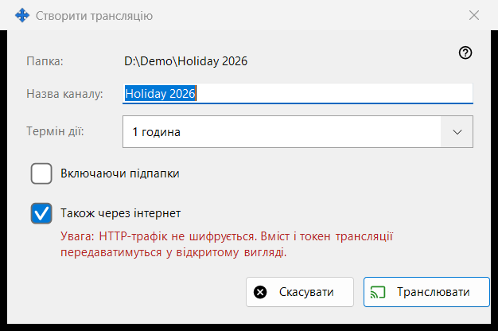
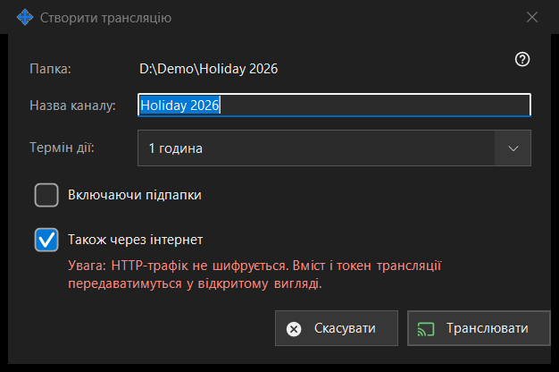

Створити трансляцію
Призначення
Налаштовує одну трансляцію до її створення: назву, термін життя та вихід за межі локальної мережі. Діалог відкривається з вікна трансляцій кнопкою «Створити трансляцію..» для вибраного файла чи папки. Нічого не створюється й не надсилається, доки ви не натиснете «Транслювати».


Порядок дій
- Перевірте шлях у першому рядку («Папка:» або «Файл:»).
- За потреби змініть «Назва каналу:»; спершу це ім'я папки чи файла.
- Виберіть «Термін дії:».
- Для папки ввімкніть «Включаючи підпапки», якщо вони потрібні.
- Залиште або зніміть «Також через інтернет».
- Натисніть «Транслювати» (Enter) або «Скасувати» (Escape).
Елементи вікна
Назва й термін дії
Назва каналу - те, що показує список трансляцій. Термін дії: 24 години (за замовчуванням), 1 година, 7 днів або «До відкликання» - без кінцевої дати, трансляція живе, доки ви не відкличете її у вікні трансляцій.
Включаючи підпапки
Показується лише для папки й за замовчуванням вимкнено. Визначає, чи потраплять у трансляцію файли з вкладених папок.
Також через інтернет
Увімкнено, якщо в налаштуваннях роздачі експорт не обмежено локальною мережею. Коли прапорець стоїть, посилання містить поряд із локальною адресою ще й адреси цього ПК в інтернеті (IPv6 і з прокинутим портом), якщо вони відомі. Увімкнення перемикає термін дії з 24 годин на 1 годину (можна повернути) і показує червоне попередження: HTTP-трафік не шифрується, вміст і токен трансляції передаються у відкритому вигляді. Будь-хто, у кого є посилання, може читати файли трансляції, доки термін не минув або її не відкликано. Зніміть прапорець, щоб трансляція лишалася в локальній мережі.
Транслювати й Скасувати
«Транслювати» лише повертає ваш вибір вікну трансляцій, а воно створює трансляцію й копіює її посилання. «Скасувати» закриває діалог, нічого не створюючи.
Налаштування менеджера · Налаштування спільного доступу SFTP · Налаштування сервера обміну